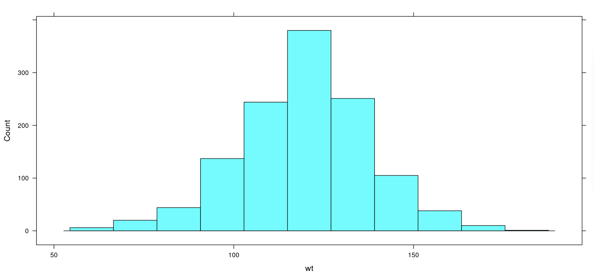
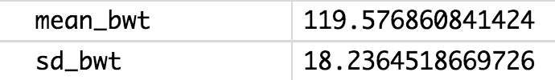

Lesson 18: What’s Your Z-Score?
Lesson 18: What's Your Z-Score?
Objective:
Students will understand that a z-score can be used to measure how far - or how many standard deviations - an observation is away from the mean. Typically z-scores will range between -3 and +3. For simulations involving shuffling, if we compute a z-score that lies far away from the mean, then we might conclude that the outcome was not due to chance. If we see a z-score that lies close to the mean, then we might conclude it was by chance.
Materials:
-
Projector to display RStudio function
-
RScript with all of the functions in this lesson
-
A ruler with centimeter marks on it
Vocabulary:
z-score standardized score Empirical Rule
Essential Concepts:
Essential Concepts:
Z-scores offer us a way to measure how extreme a value is, regardless of the units of measurement. Typically z-scores will range between -3 and +3, so values that are at or are more extreme than -3 or +3 standard deviations are considered extremely rare.
Lesson:
-
Ask students to recall what they remember about normal distributions.
Answer: Normal distributions are unimodal and symmetric, and are often referred to as bell-shaped. Some real-life examples of variables that produce normal distributions are people’s heights, scores on standardized tests, and body temperatures.
-
Display the following statement to students: “All normal distributions are bell-shaped, but not all bell-shaped distributions are normal.” Then inform students that normal distributions have special properties.
-
Display the image below and introduce the Empirical Rule, which states:
• Approximately 68% of the observations in a normal distribution fall within one standard deviation of the mean
• Approximately 95% of the observations in a normal distribution fall within 2 standard deviations of the mean
• Approximately 99.7% of the observations in a normal distribution fall within 3 standard deviations of the mean

-
Open RStudio and project for students to see. Load the babies dataset, named Gestation by following these steps:
- Enter data(Gestation) in the Console
- You should see Gestation located in your Environment
- Enter View(Gestation) in the Console
Display the help documentation by typing ?Gestation. Ask student teams to predict which of the variables in the "Gestation" dataset they think might be normally distributed. Choose a couple of teams to share out.
Description of numerical variables:
- wt - birth weight (in ounces)
- gestation - length of the pregnancy (in days)
- parity - 0 if baby was first born, 1-13 otherwise
- age - mother’s age (in years)
- ht - mother’s height (to the last completed inch)
- wt.1 - mother’s weight (in pounds)
- dage - father's age (in years)
- dht - father's height (to the last completed inch)
- dwt - father's weight (in pounds)
-
Create histograms using the variables shared by student teams. There are a few variables that look normally distributed, such as the birth mother's heights. We will investigate the babies’ birth weights.
histogram(~wt, data = Gestation)
 -
Ask students:
-
Does the distribution of baby birth weights look approximately normal? Explain. Answer: The distribution of baby birth weights is unimodal, roughly symmetric, and somewhat bell-shaped, so it might be approximately normal.
-
What do you approximate the mean weight of the distribution to be? How about the standard deviation? Answers will vary. Use this as a check for understanding of standard deviation as well as estimating the mean using the balancing point concept. See next step for calculating the actual mean weight and standard deviation.
-
-
Use RStudio to calculate the actual mean and standard deviation.
mean_wt <- mean(~wt, data = Gestation)
sd_wt <- sd(~wt, data = Gestation)

-
Have students draw a number line with seven equally spaced intervals and label it “Baby birth weights in ounces.” Make sure students leave about 5 centimeters of space above the number line to draw a normal curve. Have students label the middle tick mark with the mean baby weight (round to the nearest tenth of an ounce = 119.6 ounces). Then ask students:
-
What weight is one standard deviation above the mean? Answer: A baby whose weight is 137.8 ounces is one standard deviation above the mean baby weight.
-
What weight is one standard deviation below the mean? Answer: A baby whose weight is 101.4 ounces is one standard deviation below the mean baby weight.
Have students label their number line with these values.
-
-
Have students continue filling their number line with the corresponding weights that are two and three standard deviations from the mean. Answer: A baby who weighs 156 ounces is two standard deviations above the mean weight, and a baby who weighs 174.2 ounces is three standard deviations above the mean weight. A baby who weighs 83.2 ounces is two standard deviations below the mean weight, and a baby who weighs 65 ounces is three standard deviations below the mean weight.
-
Ask students: If the distribution of baby weights is approximately normal, what percentage of babies weigh between 101.4 ounces and 137.8 ounces? Answer: If the distribution of baby weights is approximately normal, about 68% of babies should weigh between 101.4 ounces and 137.8 ounces.
-
Use RStudio to confirm if indeed the distribution of baby weights is approximately normal.
one_sd_wt <- filter(Gestation, wt > 101.4, wt < 137.8)
Answer: In this sample of 1236 observations, there are 861 babies whose weights are one standard deviation from the mean, so 861/1236 = 0.697. This means that around 69.7% of the weights of the babies in this sample fall within one standard deviation from the mean baby weight. This is close to 68%, so it seems that the distribution of baby weights is approximately normally distributed.
Note: If you continue this process for this sample, you will find that the distribution of baby weights is normally distributed as defined by the Empirical Rule. In this sample, 1171/1236 = 94.7% of the baby weights fall within two standard deviations of the mean, and 1229/1236 =99.4% of the baby weights fall within three standard deviations of the mean.
-
Now that it has been verified that a normal distribution is an appropriate model for this distribution, have students draw a normal curve above the number line. Suggested method to obtain a decent normal curve:
• Step 1: Draw a dot 4 centimeters above the mean weight
• Step 2: Draw dots 2.4 cm above the weights that are 1 standard deviation from the mean
• Step 3: Draw dots 0.36 cm above the weights that are 2 standard deviations from the mean
• Step 4: Draw dots right above the number line for the weights that are 3 standard deviations from the mean
• Step 5: Connect the dots with a smooth curve
-
Tell students that we are using this normal curve as a model to represent the distribution of all baby weights. This will allow us to make comparisons, draw conclusions, and make predictions about baby weights. Let’s see:
-
What percentage of babies weigh less than 119.6 ounces? Explain. Answer: About 50% of babies weigh less than 119.6 ounces. Since normal distributions are symmetric, the mean and the median are about the same. Since the median divides a distribution into equal halves, in this case so does the mean.
-
What percentage of babies weigh between 119.6 and 137.8 ounces? Answer: About 34% of babies weigh between 119.6 and 137.8 ounces. According to the Empirical Rule, 68% of the observations fall within one standard deviation of the mean, and since normal distributions are symmetric, the area under the curve from the mean to one standard deviation is half of 68% or 34%.
-
What percentage of babies weigh more than 137.8 ounces? Answer: About 16% of babies weigh more than 137.8 ounces. From part a and b above, we know that 50%+34%=84% of babies weigh less than 137.8 ounces, so 100%-84%=16% weigh more than 137.8 ounces.
-
-
Explain that statisticians use something called a z-score to compare values. A z-score tells us how many standard deviations away from the mean an observation is. Another name for z-score is a standardized score.
-
Introduce the formula for calculating a z-score and discuss what each symbol in the formula means.
-
Explain that z-scores answer the question: “How typical is x?”. If x is the same as the typical value (the mean), then z = 0. If x is one standard deviation away from the mean, then z = -1 or +1. Remind students from the normal curve that as you move farther from the center (from the mean), there are fewer observations. Therefore, a large z-score is considered an unusual value.
-
Have students calculate the z-score for a baby that weighs 100 ounces:
z = (100 - 119.6) / 18.2 = -1.08
Ask the class:-
What does a negative z-score mean? Answer: A negative z-score means the x value is below the mean. This means that the weight is below average.
-
What does a positive z-score mean? Answer: A positive z-score means the x value is above the mean. This means that the weight is above average.
-
What is the most negative z-score you think we will find? What is the most positive z-score? Answer: Typically, values in a normal distribution rarely fall outside two or three standard deviations from the mean. For data derived from chance, we probably won’t see any values that are less than -3 or greater than +3.
-
-
Ask students: “Where does a baby that weighs 100 ounces fall within the distribution of baby weights?”. Have students find 100 ounces on the x-axis of the normal curve and draw a vertical line from the x-axis until it intersects the normal curve. Have them shade the area under the curve to the left of the vertical line.
-
Tell students that the shaded area represents a percentile in the distribution. A percentile is the exact value in which the desired proportion of observations lies below the specific value in a distribution. Use RStudio to calculate the percentile.
pnorm(100, mean = 119.6, sd = 18.2) = 0.140
-
Doctors report percentiles to describe a child's development compared to other children their age. For a baby that weighs 100 ounces, a doctor would report the following: “The baby is at the 14th percentile in weight.” This means that the baby weighs more than 14% of all babies. This is between one and two standard deviations from the mean so there is no cause for concern with this baby's weight.
Note: A z-score can also be used to calculate a percentile, but since a z-score is a standardized score, the mean of the distribution would be zero and the standard deviation would be one.
pnorm(-1.08, mean = 0, sd = 1) = 0.140
-
Inform the class that they will be using RStudio during the next few days to practice using normal models.
Class Scribes:
One team of students will give a brief talk to discuss what they think the 3 most important topics of the day were.
Next 2 Days